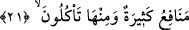

Tefsir ehli der ki: Ya “Tur” dağın adı, “Sînâ” da o bölgenin ismidir. Dağ o bölgeye
izâfe edilmiştir. Ya da İmruü’l-kays kelimesi gibi iki kelimeden meydana gelmiş bir
özel isimdir.
Bu ağaç başka yerlerde de çıktığı halde oradan çıktığının tahsis edilmesi, orayı tâzim
içindir. Çünkü orası onun en üstün menşeidir. Celâleyn’de “İlk zeytin orada bitmiştir.”
der.
“Bu ağaç hem yağ hem de yiyenlerin ekmeğine katık edecekleri (zeytin) verir.”
‘Yağ vermek’, ‘ağac’ın diğer bir sıfatıdır. Yani yağlı olarak, yağ ile beraber olduğu
halde biter, demektir. Nitekim Râğıb: “Bunun mânâsı, içinde yağ bilkuvve mevcud
olduğu halde biter, demektir.” der. Bu ifâdenin ‘Ağaç, yağı içerir ve hâsıl eder.’
anlamında olması da mümkündür. Çünkü “bitirmek/vermek” yağın değil ağacın gerçek
sıfatıdır.
Yâni bu ağaç, kendisiyle yağlanılan ve lamba yakılan bir yağ, katık etmek üzere içine
ekmek batırılan, pekmez ve sirke gibi ekmeğin kendisiyle boyandığı bir katık olma
özelliklerini kendisinde toplayan bir şey bitirir.
et-Te’vîlâtü’n-Necmiyye’de der ki: “O, ilâhî sıfatların nurlarının tecellîsinin tesiriyle
ruh Tûr-i Sînâsında yetişen hafî ağacıdır. “Bu ağaç yağ verir” Bu yağ, vâsıtasız olarak
ilâhî feyzi kabul için güzel istîdâd sâhibi olmaktır. Bu “yağ”ın yeri, rûhun üstünde olan
hafîdir. O ise mukarreb meleklerin bile muttali olamadığı Allah ile ruh arasında bir
sırdır. O, himmet kuvveti ile kevneynin ‘yiyenler’ine katıktır.”
21. Hayvanlarda sizin için elbette ibretler vardır. Onların karınlarındakinden
(sütlerinden) size içiririz. Onlarda sizin için birçok faydalar daha vardır; etlerinden
de yersiniz.
Dört ayaklı “Hayvanlarda” yâni deve, sığır ve koyunlarda “sizin için elbette ibretler
vardır.”
Ey insan oğulları, Allah’ın sizin için yarattığı dört ayaklı deve, sığır ve koyun gibi
hayvanlarda hâlinden ibret alacağınız ve yaratıcısının kudretinin büyüklüğüne ve
hikmetinin inceliğine delil bulacağınız âyetler (işâret ve deliller) vardır.
Sanki “Bu ibret nasıldır?” diye sorulmuş ve cevap olarak şöyle buyrulmuştur:
“Onların karınlarındakinden (sütlerinden) size içiririz.”
“Karınları” ile onların içi veya sütün kendisinden meydana geldiği yem
kastedilmiştir.
et-Te’vîlâtü’n-Necmiyye’de şöyle der: “İşâret etmektedir ki Allah Teâlâ hayvanların
karnından gübre ile kan arasından saf süt içirdiği gibi -ki bunda görenler için ibret